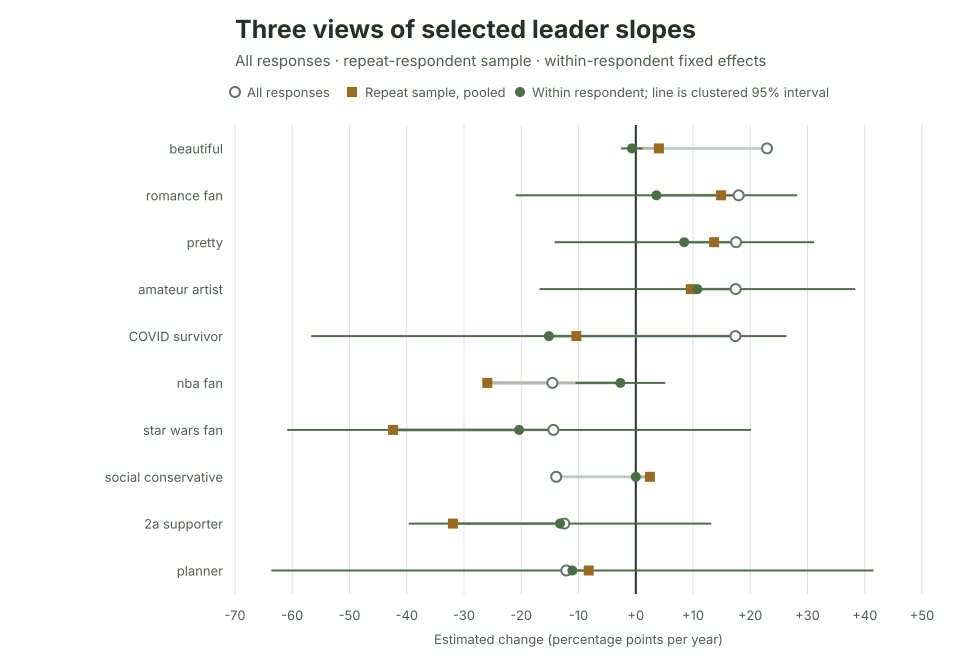

Ipseity Daily Pulse · 2026-09-20
One identity trend, three comparisons
All-response, repeat-sample, and within-person slopes answer different questions.
By Ceetown · 3 minute read
The same Ipseity Daily signifier can tell three very different trend stories.
Across all current responses, beautiful has an estimated
+22.9 percentage-point annual trend. When the pooled model is restricted
to the 30 people who answered that signifier on multiple dates, the
estimate is +4.0 points (clustered 95% interval -38.9 to +47.0). When
stable differences between those same people are absorbed, the
within-person estimate is -0.7 points (-2.6 to +1.2).
These are not three votes on one true number. The first comparison changes the sample; the second changes the model on the same repeat observations. Only one of the 30 repeat respondents changed endorsement, so the within-person result is especially fragile. The useful finding is methodological: a pooled sample trend, selection into a repeat sample, and change within people are different questions.
Source: Ipseity Daily download page

Evidence note
The values use canonical microdata through 2026-09-19, retrieved at
2026-09-20T10:06:08Z. The 20 signifiers were selected because their
all-response slopes were extreme. Repeat respondents are small, selected
subsets, and neither shift is a causal decomposition. Full estimates and
limitations are recorded in CURRENT-FINDINGS.md and outputs/leader-within-respondent-sensitivity.csv.
Snapshot note: This dated entry and figure are preserved from the stated check. Links to the cumulative report and aggregate tables may show newer data.